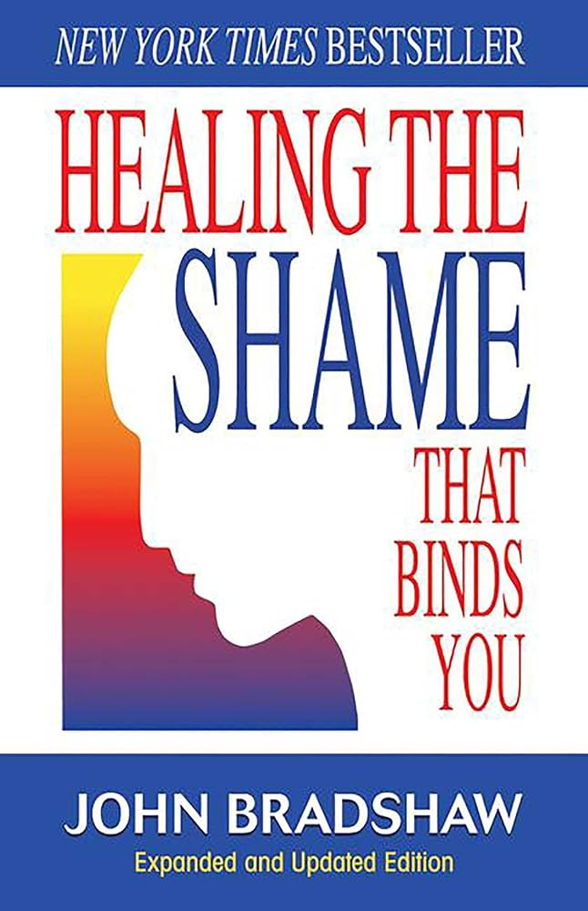
Healing the Shame That Binds You
John Bradshaw
The foundational text on toxic shame — how it takes root in childhood and keeps us silent as adults. Naming the shame is where the unbinding begins.
Find it →Become a Brave Voice. We will only be comfortable speaking about uncomfortable subjects after we have practiced — and the only way to practice is together. This page is where the practice begins.
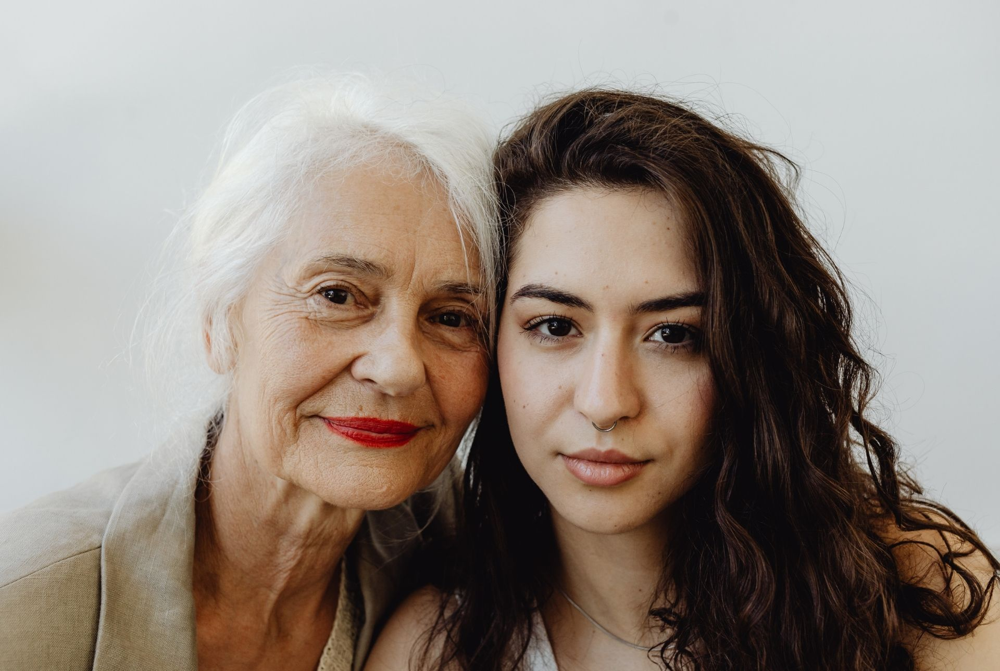
We cannot expect children to broach a subject they do not hear openly discussed. The silence around child sexual abuse is not a failing of the young — it is a failing of the grown-ups who inherited the silence and passed it down.
Breaking that pattern does not require a podium or a platform. It requires one honest conversation, and then another, until the topic stops being the thing nobody can name.
We share these here not to overwhelm but to make plain how widespread CSA is — and how much rests on the willingness of one adult to start a conversation.
girls in the U.S. experience some form of sexual abuse before age 18.
Centers for Disease Control & Preventionboys in the U.S. experience some form of sexual abuse before age 18.
Centers for Disease Control & Preventionof children who are sexually abused are abused by someone they or their family already know.
Darkness to Lightof those who harm children are members of the child's own family.
Crimes Against Children Research Centerof survivors do not disclose for at least a year. Many wait decades. Some never tell.
Smith et al., Child Abuse & Neglecthigher risk of depression, PTSD, and substance use disorders in adulthood for survivors.
Adverse Childhood Experiences Study, CDC–KaiserBehind every number is a person who deserved to be heard.
Three approaches that Brave Voices leans on — each one a different angle on the same work. Tap through to see how each can help you start, steady, and keep the conversation going.
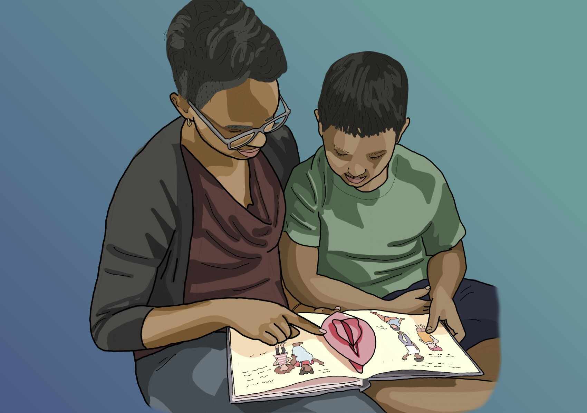
Children who grow up hearing honest, age-appropriate language about their bodies and sexual development are better equipped to name what happens to them — and better protected from the silence that abuse relies on. Prevention starts long before a crisis does.
Sex Positive Families provides education and resources to help families raise sexually healthy children using a shame-free, comprehensive, and pleasure-positive approach.
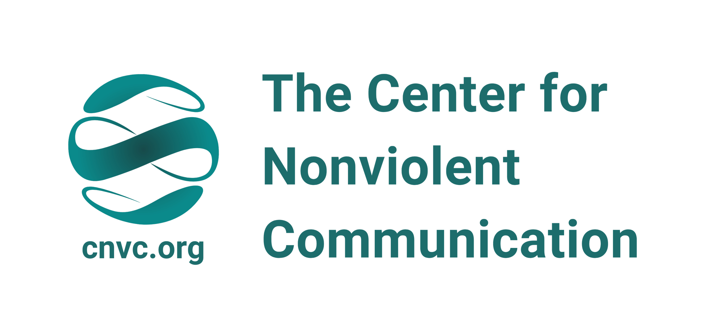
Brave Voices grew out of both lived experience and Nonviolent Communication (NVC) — a practice developed by Marshall Rosenberg that gives people a reliable way to say hard things without attack, defense, or collapse. Our founder is a survivor and a trained NVC practitioner, and the two have been inseparable in shaping this work.
NVC asks four small questions. They sound simple. They are not.
Starting a Brave Voices conversation with this shape keeps you rooted in what is true for you, instead of what you fear the other person will think. It is one of the most powerful tools we know for breaking silence without also breaking relationship.
NVC is a practice, not a script. It takes reps. Learn more about NVC from the Center for Nonviolent Communication.
Ready to build the practice? NVC Academy offers online courses and live trainings from world-class NVC practitioners — at every level, from first-timer to long-time student.
Explore NVC Academy →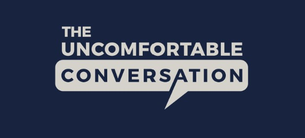
The Uncomfortable Conversation, Inc. is dedicated to normalizing conversations about sexual violence, particularly among young men. They believe conversations are accessible, practical, and scalable tools that drive individual, organizational, and cultural change.
The organization has produced 100+ short videos illustrating how people of all genders — but especially men — can support survivors, navigate consent, and address troubling ideas or behaviors among peers.
Talks and conversations we keep coming back to — from survivors, advocates, and educators who have turned their voices into tools other people can use.

Recent studies show sibling sexual abuse (SSA) is the most common form of child sexual abuse — affecting as many as 1 in 5 families, and at least three times more prevalent than father–child abuse. Yet SSA remains what survivors and researchers have called the "hidden taboo" — hidden in families, hidden in society, and under-researched as a result. Survivors, perpetrators, and the families around them are too often left to navigate it without guidance.
Jane Epstein, an SSA survivor and advocate, spent 40 years in a continual state of dissociation — in and out of therapy, depressed, and at times suicidal — believing she was the only one. Sobriety and self-reflection eventually led her to write her story, and she discovered that almost no one on the entire internet was speaking about SSA. So she started speaking, and #SiblingsToo was born.
In her TEDx Talk, Jane explains why helping survivors share their stories is how we build the community that inspires new research, solutions, awareness, prevention, and support — and how one voice gives the next survivor permission to find theirs.
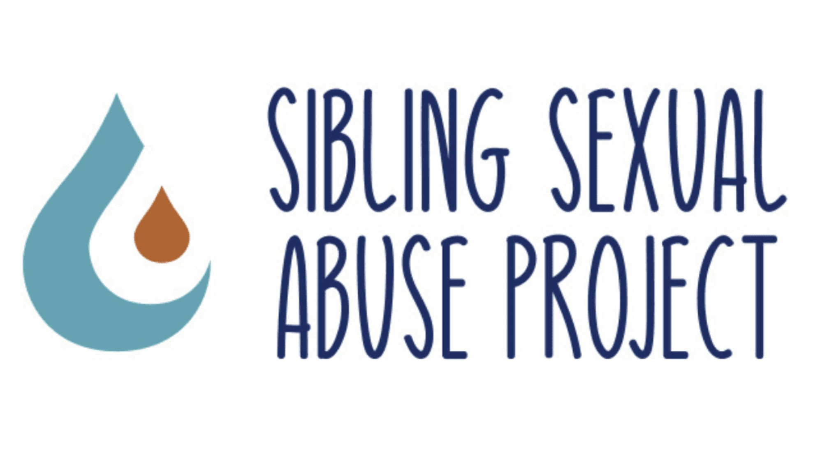
Held in February 2022 and organised by the RCEW National Project on Sibling Sexual Abuse (2020–2022), the National Sibling Sexual Abuse Conference for Frontline Sectors was the first national conference of its kind in the U.K.
Sibling sexual abuse is the most common form of child sexual abuse in our homes — estimated to be three times more likely than abuse by a parent — and it remains a pressing social and public health problem. The conference brought together professionals across criminal justice, education, health, local government, policing, social care, support centres for victim-survivors, and the third sector.
The recorded sessions and films are designed to help practitioners build professional confidence and knowledge, and to better support affected children, young people, families, and adult survivors.

Rena Romano — author, mindset coach, and survivor-advocate who once shared her story on The Oprah Winfrey Show — argues that healing from child sexual abuse begins with the decision to tell. Whether a survivor keeps telling, or goes silent again, depends almost entirely on how the first listener responds.
"If healing begins by telling," Romano says, "then we must make telling safe." Her TEDxOcala talk is a practical invitation to be the listener a survivor can safely speak to — and a reminder that any one of us can be that person.

Dr. Yvette Erasmus teaches processes and inner maps designed to help people transform self-sabotaging habits and disconnected relationships into deeper connection, meaning, and purpose. Her work speaks to the questions many of us carry quietly:
Through educational programs, group coaching, and personal sessions, she offers a welcoming, non-judgmental space where inner strength and the authentic self can be practiced out loud.
Two interviews to start with:
Watch Part One →
Watch Part Two →
The link below unlocks a discount on Dr. Yvette's course. Clicking through supports Brave Voices at no extra cost to you.
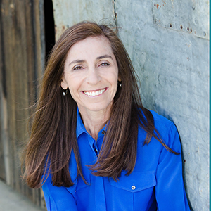
Feather Berkower, founder of Parenting Safe Children, is a licensed clinical social worker and one of the nation's leading experts in child sexual assault prevention. Across more than three decades, she has dedicated her career to teaching parents and youth professionals how to make their communities "off limits" to child sexual assault.
Using her community-based approach, Feather has trained more than 150,000 schoolchildren, parents, and youth professionals across the United States — and she now shares that knowledge with parents, grandparents, aunts, uncles, and youth professionals through her live workshops worldwide and her pre-recorded online workshop.

Sarri Gillman, LMFT has been a licensed marriage and family therapist since 1986. Alongside her clinical work, she spent two decades as an executive director of several nonprofits and seven years teaching leadership to managers and executives. She is an author, TEDx speaker, presenter, community leader, and SoulCollage® facilitator.
She is also the creator and founder of the Transform Your Boundaries® and Naming and Taming Overwhelm® workshops, and a member of the Compassionate Mind Foundation.

LaDonna Silva, LMFT holds a Master's degree in Counseling Psychology and Holistic Studies from John F. Kennedy University — a program that combined Transpersonal Psychology and Somatic Psychology. That blend of spirituality and the body gives her a foundation to meet clients far beyond the cognitive realm alone.
In this interview, LaDonna speaks about finding voice, a lifetime of advocacy, and breaking dysfunctional family systems with curiosity, compassion, and care — plus an introduction to Internal Family Systems (IFS).

Rachael Herron's episode is technically about writing — but it's really about learning to manage, cope with, and even enjoy the uncomfortable aspects of life. People don't sit in discomfort unless they care enough.
Brave Voices is asking you to care enough to sit in the discomfort of a difficult, uncomfortable subject — and Rachael's framing is one of the gentlest invitations to do exactly that.
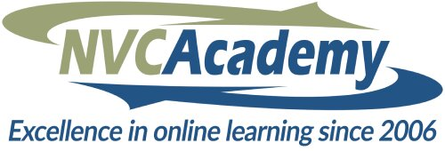
The NVC Academy Library brings together a rich, ever-growing collection of Nonviolent Communication teaching from experienced trainers around the world. Whether you're new to NVC or deepening an existing practice, you'll find courses, workshops, and practical tools that support real change in how you communicate, connect, and lead.
Develop your capacity for empathy, navigate conflict with more clarity, and strengthen relationships — at a pace that fits your life. Start when you're ready, revisit teachings anytime, and integrate NVC into your everyday conversations.
NVC asks four small questions. They sound simple — and the questions only become natural with reps. The communities and resources below offer free or donation-based ways to practice Compassionate Communication, with people who are practicing too.
Podcasts Brave Voices recommends for survivors, supporters, and anyone learning to listen well.
Eight books Brave Voices returns to — on shame, boundaries, compassion, disclosure, and the long road home.

The foundational text on toxic shame — how it takes root in childhood and keeps us silent as adults. Naming the shame is where the unbinding begins.
Find it →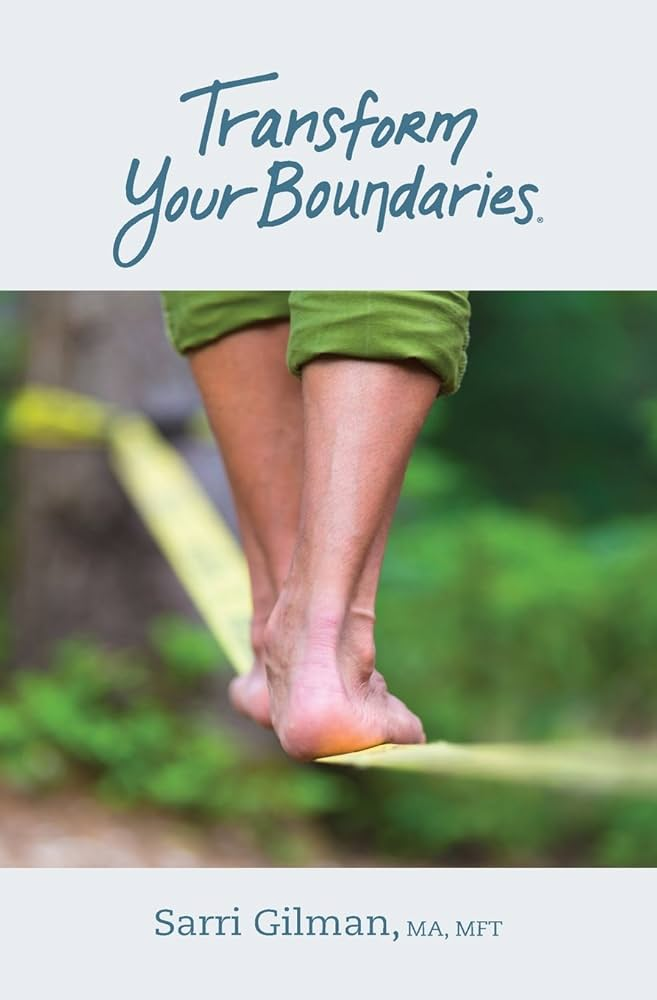
Boundaries as a practice of self-knowing, not a wall you build. A workbook you'll return to — from the therapist whose interview lives one section up.
Find it →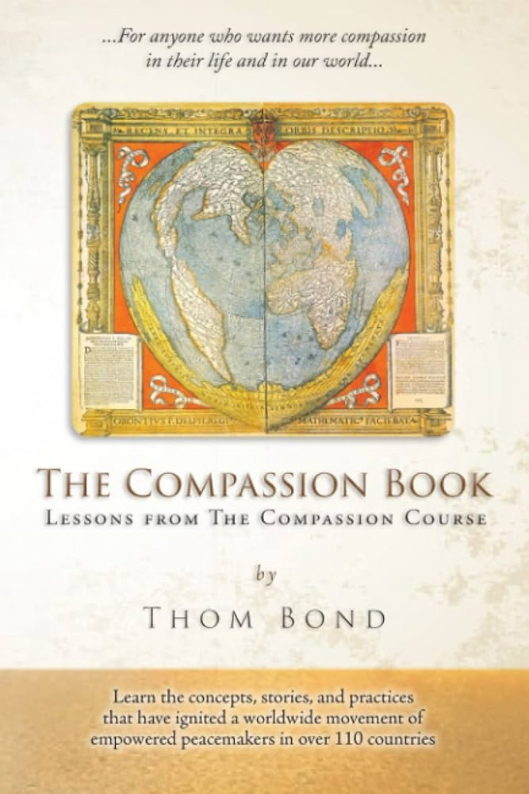
Daily Nonviolent Communication practice in small, reliable pieces. A year of gentle prompts that build the muscle, one morning at a time.
Find it →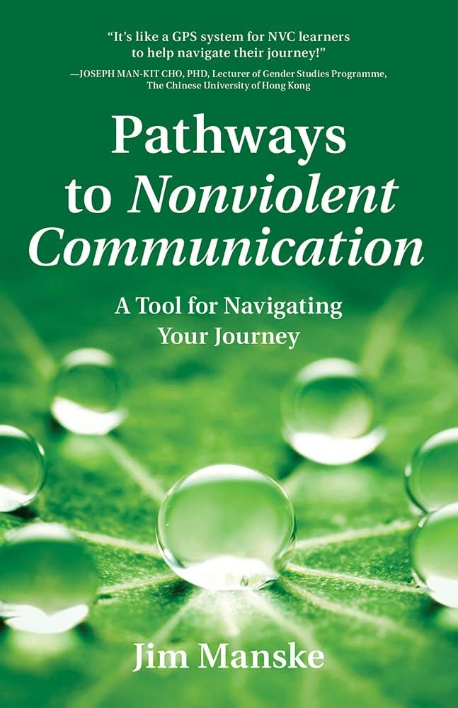
A practical field guide for anyone navigating the NVC journey — from first encounter to daily practice. Maps for the parts Marshall Rosenberg left blank.
Find it →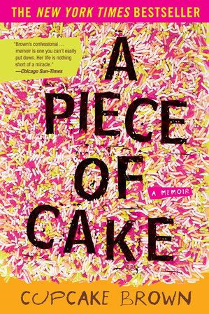
A memoir of abuse, addiction, and survival that refuses to sand down any of it. Unsparing, and somehow still hopeful.
Find it →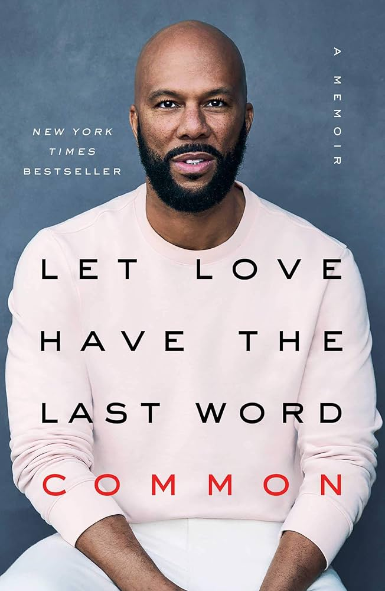
The rapper's meditation on love, family, and his own disclosure as a survivor of childhood sexual abuse. Spare, vulnerable, and generous.
Find it →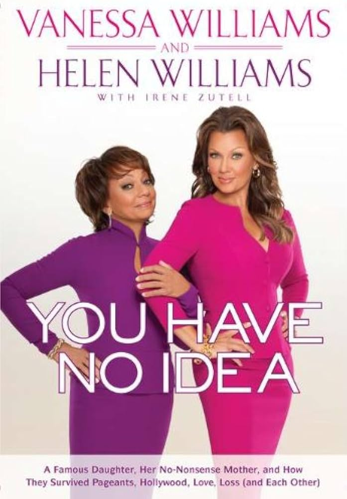
A mother and daughter write across the silence that divided them — including Vanessa's childhood assault — and build a new kind of conversation.
Find it →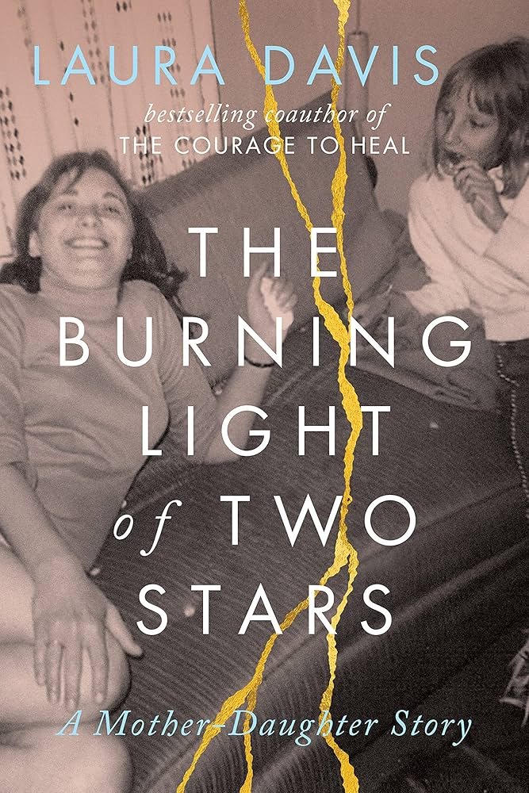
From the co-author of The Courage to Heal, a mother-daughter memoir about rupture, estrangement, and the slow work of finding each other again.
Find it →Resources Brave Voices returns to — some written for our participants, some drawn from the wider NVC and survivor-support communities. Open, read, and come back when you need them.
A curated set of organizations doing the work — preventing harm before it happens, and walking with survivors after it has.
Use your voice to protect children from sexual harm. Start the conversation this week — with one person, in your own words. That is how the silence ends.